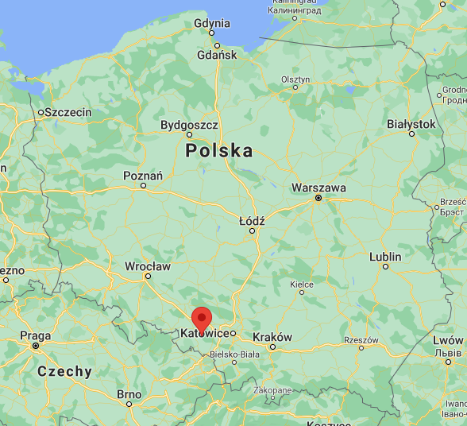

Dziergowice (dodatkowa nazwa w j. niem. Oderwalde, do 1931 Dziergowitz) – wieś w Polsce położona w województwie opolskim, w powiecie kędzierzyńsko-kozielskim, w gminie Bierawa.
Trochę historii...
Najstarsze wzmianki o wsi Dziergowice pochodzą z 1274. Na ziemiach należących do księcia raciborskiego rycerz Henryk założył osadę. W 1910 roku 1588 mieszkańców mówiło w języku polskim, 76 w językach polskim i niemieckim, natomiast 107 osób posługiwało się jedynie językiem niemieckim. 22 czerwca 1919 roku 80 osób, do których nie dotarła informacja o odwołaniu planowanego powstania, w wyznaczonym terminie powstało przeciwko Niemcom, zajmując lokalne urzędy niemieckie. Zdekonspirowani spiskowcy musieli uchodzić do Polski. W wyborach komunalnych w listopadzie 1919 roku 523 głosy oddano na kandydatów z list polskich, którzy zdobyli łącznie 14 z 18 mandatów. Podczas plebiscytu we wsi uprawnionych do głosowania było 1164 mieszkańców (w tym 127 emigrantów). Za Polską głosowało 857 osób, za Niemcami 279 osób. Od 1919 r. w Dziergowicach działał oddział Polskiej Organizacji Wojskowej Górnego Śląska.
Nazwa miejscowości ma średniowieczną metrykę. Notowana jest w różnych formach w historycznych dokumentach od XIV wieku. Po raz pierwszy jako Dirgowicz (1380), Dzirgowyecz, Dyrgowicz (1564), Dziergowice (1679), Dziergovitz (1687/88), Dziergowitz, Dziergowice (1845), Dziergowice (Dziergowitz) - Oderwalde (1939). W alfabetycznym spisie miejscowości na terenie Śląska wydanym w 1830 roku we Wrocławiu przez Johanna Knie wieś występuje pod obecnie używaną, polską nazwą Dziergowice oraz niemiecką nazwą Dziergowitz.